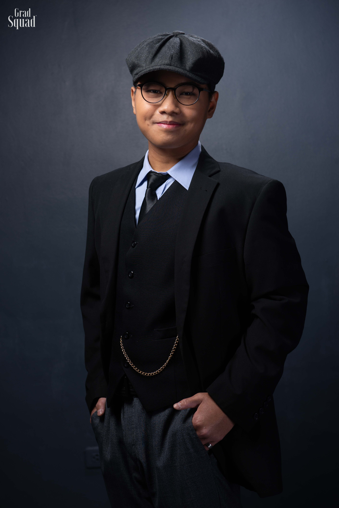

The Developer
Bridging Logic,
AI & Architecture.
I am a 4th-year Information Technology student, currently an undergraduate at Holy Angel University specializing in Front-End Web Development. My approach to engineering interfaces is deeply intertwined with modern AI-driven workflows—often referred to as "vibe coding". I leverage artificial intelligence not just as an auxiliary tool, but as a collaborative architectural partner to rapidly prototype, iterate, and deploy seamless user experiences.
Why Information Technology?
I pursued Information Technology because it serves as the backbone of modern business, offering endless opportunities to solve real-world problems. With almost every company relying heavily on digital infrastructure, choosing IT allows me to directly support organizations by designing and building efficient, scalable systems that drive their daily operations.
I quickly realized that the exact same discipline applies to Web Development. While I specialize in front-end aesthetics and accessible UI/UX, I actively dive into CMS integration, dynamic JavaScript architectures, and quality assurance to build complete, well-rounded solutions.
Beyond the IDE
Backed by hands-on agency internship experience building client-ready websites and testing production applications, I enter the tech industry focused on active creation and continuous adaptation. By expanding my technical footprint across modern front-end frameworks and collaborative Git workflows, I deliver clean, intuitive software tailored to the evolving needs of any development team.

"The art of a good website by fusing clean, intuitive aesthetics with programming architecture."